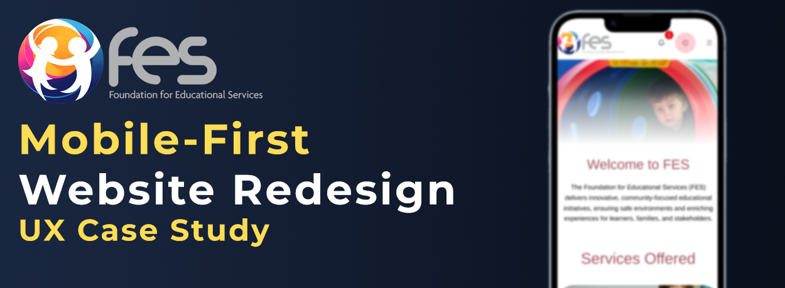

Foundation for Educational Services
Led the mobile-first redesign of the FES website, focusing on simplicity, clarity, scalability, and accessibility. The goal was to modernize the user experience while creating a structured interface system that supports complex functionality in an intuitive way.

Description
Key features of the redesign include secure online payments, QR-based child pickup scanning, document viewing, and child profile management (allowing parents to access information such as school details and official documents). The platform also integrates e-ID login for secure authentication, service booking capabilities, and accessibility-focused settings to ensure usability across different user needs.
The result is a clean, structured, and responsive interface designed to reduce friction, improve task completion, and provide a seamless experience across devices.